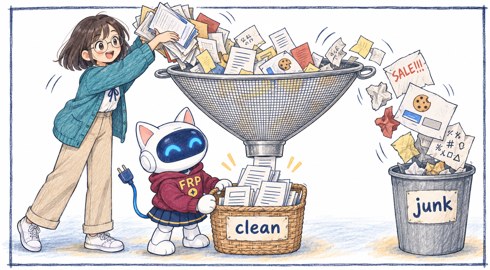
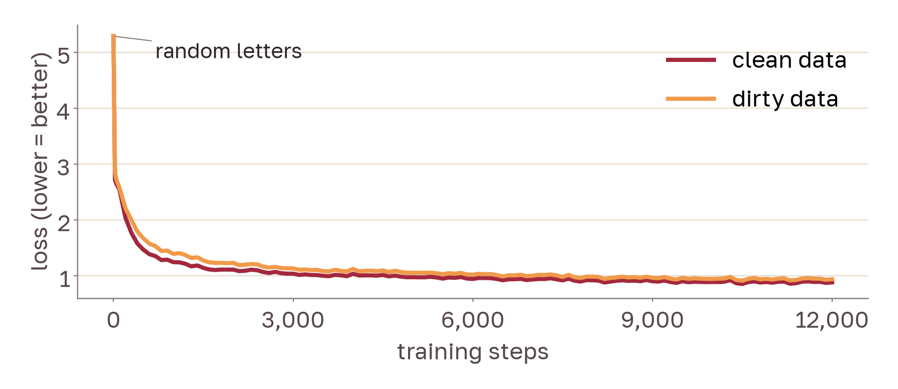

Junk In, Junk Out

We trained the same tiny model on clean and on dirty Kazakh text.
Abstract
Language models learn from web text, and web text contains junk. We trained the same tiny language model (10.9 million parameters) twice on Kazakh Wikipedia: once on clean text, and once with half of the text replaced by web junk. The dirty model wrote junk in 37 of 50 texts, the clean model in 0 of 50. The model copies what it reads.
Results
| Training text | Loss on clean text | Texts with junk |
|---|---|---|
| Clean (baseline) | 0.88 | 0 of 50 |
| Dirty (50% junk) | 0.94 | 37 of 50 |
Training

Cite
@misc{frp2026junk,
title = {Junk In, Junk Out: How Web Junk Changes a Tiny Kazakh Language Model},
author = {FRP 2026 AI Engineering track},
year = {2026}
}